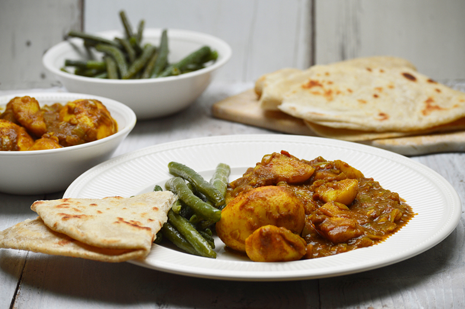

Hindoestaanse roti
Ingrediënten:
- 1 madame Jeanette
- 5 knoflooktenen
- 1 streng kousenband
- 1 spitskool
- 5 kruimige aardappelen
- 8 kippendijen zonderen vel
- 1 blik tomatenpuree (140 g)
- 1 zakje Hindoestaanse massala
- 1 el zeezout
- 3 el olijfolie
- 6 rotivellen (1,5 per persoon omdat je stukken scheurt)
Bereiding
1. Begin met het marineren van de kip (liefst een dag van tevoren). Snij hiervoor de knoflook en madame Jeanette in grove stukjes en doe ze samen met het zeezout in de vijzel. Vijzel dit totdat het een fijn en homogeen mengsel is.
2. Doe de kippendijen in een grote kom en kneed het gevijzelde mengsel goed door de kip heen, zodat het gelijkmatig verdeeld is over de kipstukken. Doe dan de massala erbij, zorg dat alle stukken bedekt zijn met het poeder.
3. Was de kousenband en snijd de topjes en eindjes eraf. Snij vervolgens de strengen in stukjes van ongeveer 10 cm.
4. Snij de spitskool door de helft en verwijder het hart. Snij vervolgens de twee helften overdwars in reepjes.
5. Schil de aardappelen, was deze en snijd ze in vier parten.
6. Verhit de olie in een braadpan. Fruit vervolgens de tomatenpuree in de olie totdat deze licht begin te knisperen, doe de kippendijen erbij en draai deze regelmatig om totdat ze aan alle kanten dichtgeschroeid zijn.
7. Giet water in de pan totdat de kippendijen net onder staan. Doe de aardappelpartjes erbij en laat het geheel, met de deksel op de pan, 45 min zacht sudderen.
8. Een kwartier voordat de kip klaar is kan je de groenten gaan bereiden. Doe wat olie in de wok of koekenpan en roerbak eerst de spitskool totdat het lichtelijk slinkt. Doe dan de kousenband erbij.
9. Schep wat vocht uit de braadpan met kip en giet deze over de groenten. Hiermee krijgen de groenten ook die lekkere pittige kerriesmaak.
10. Warm de roti’s op in een magnetron of oven. Afhankelijk van je magnetron of oven duurt dit zo’n 8 minuten. Maar blijf goed opletten want je wil natuurlijk wel dat ze lekker zacht blijven en niet hard worden.’n 8 minuten. Maar
blijf goed opletten want je wil natuurlijk wel dat ze lekker zacht blijven en niet hard worden.
Serveer de roti, kip en groenten op schalen en – heel belangrijk – weiger gebruik van bestek!